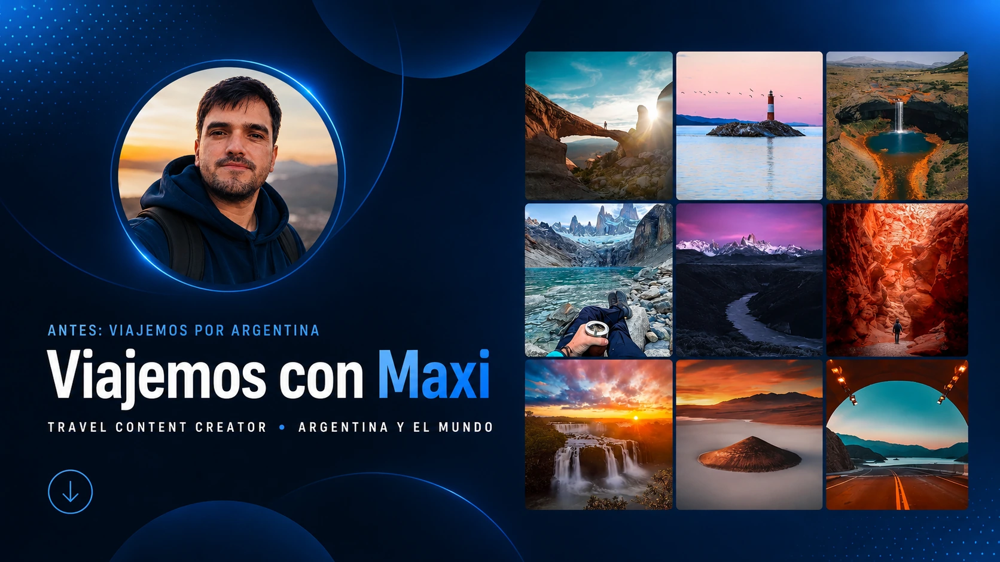

01 / PROYECTO PROPIO
Viajemos por Argentina → Viajemos con Maxi
Dirección integral de una marca de contenido turístico: estrategia, guiones, producción audiovisual, edición, publicación, comunidad y desarrollo de formatos pensados para retención y crecimiento.
Ver ecosistema de la marca ↗